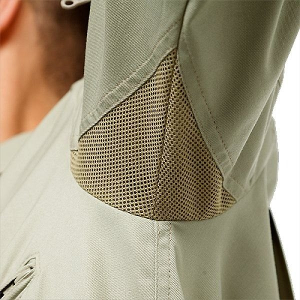
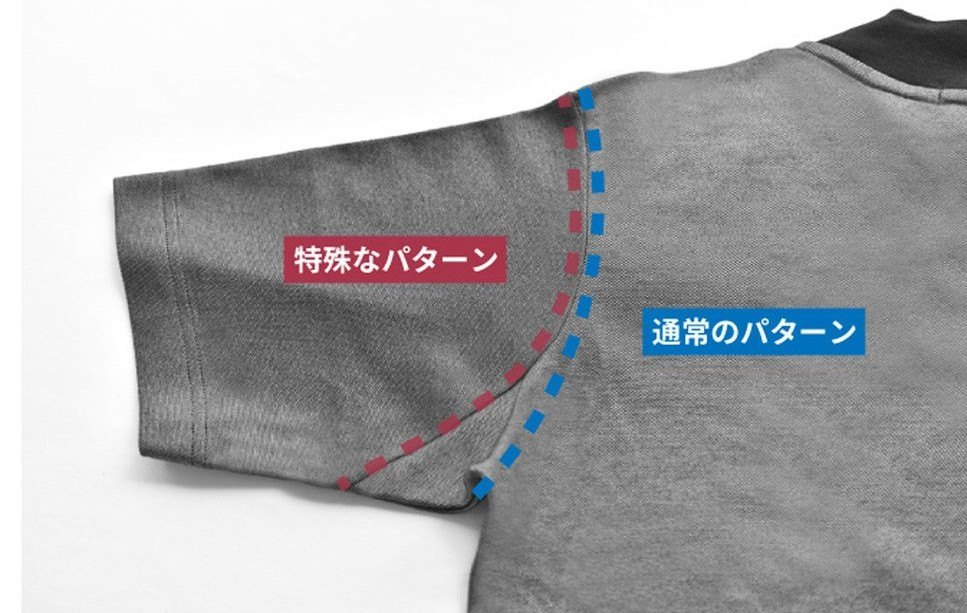
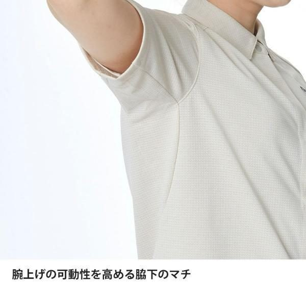
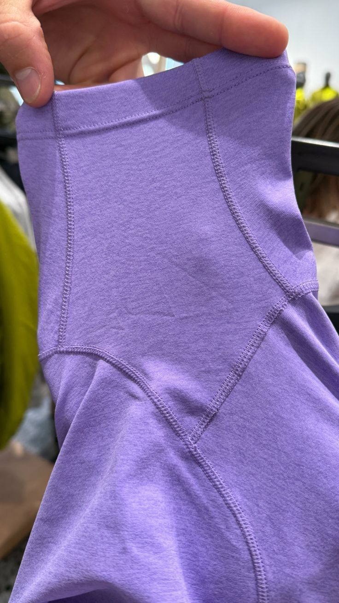
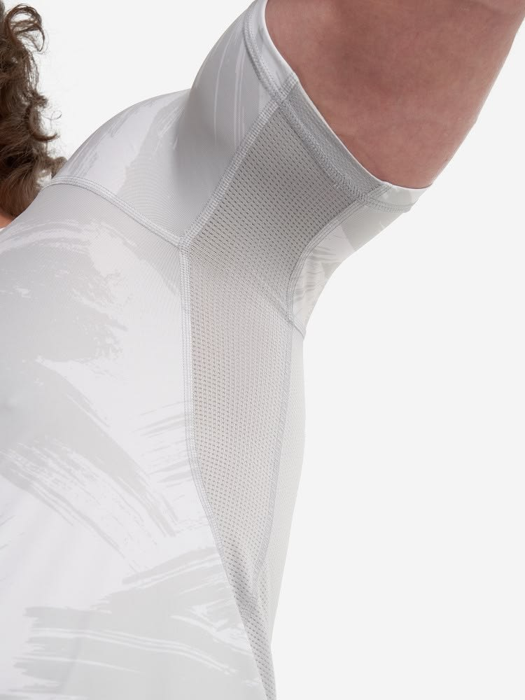
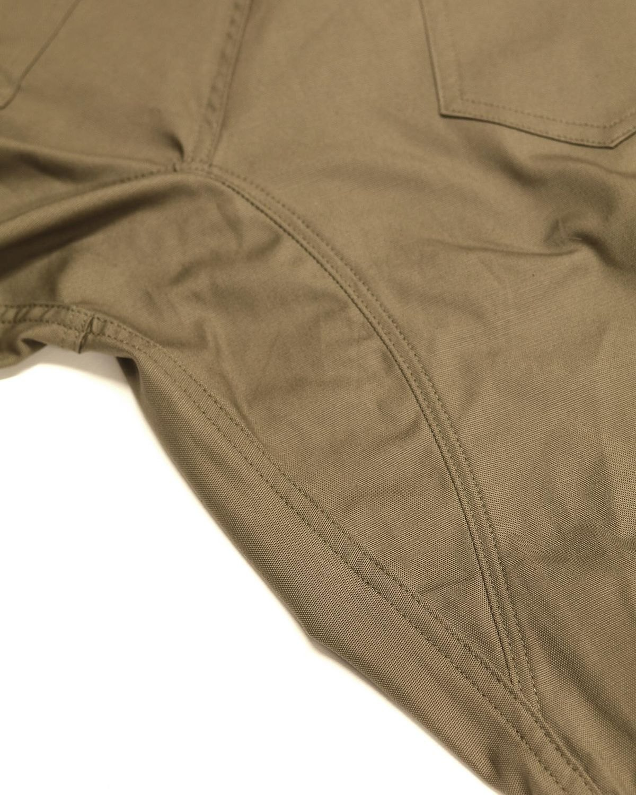
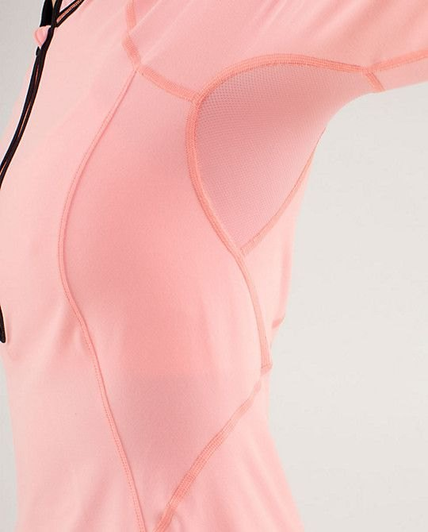
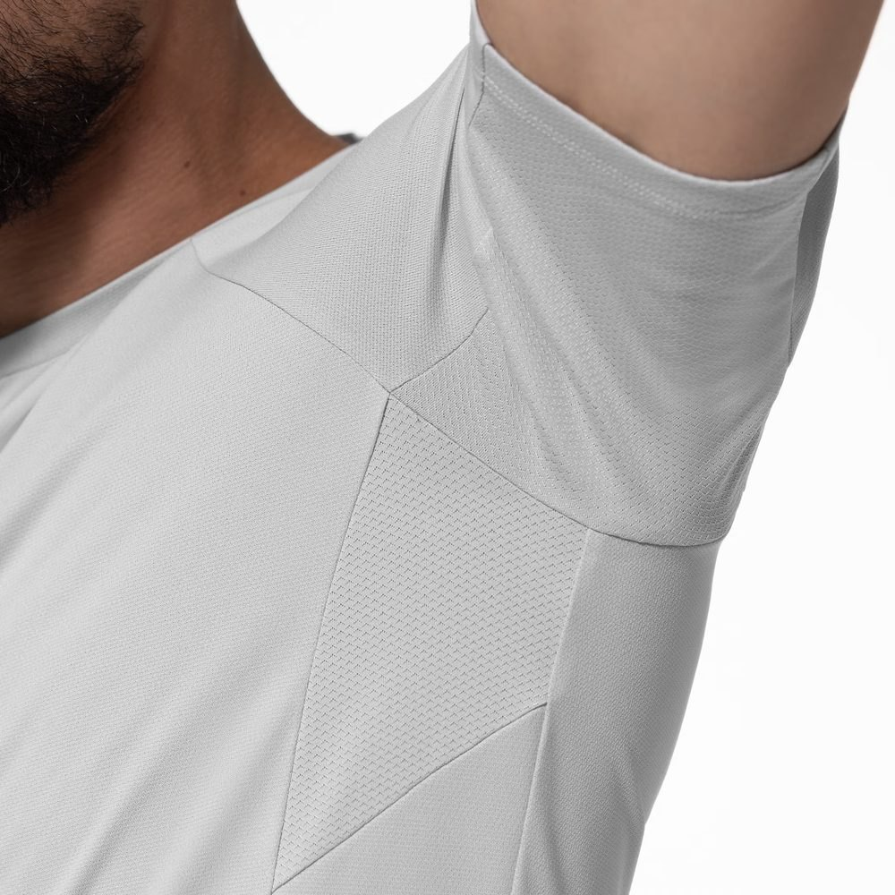
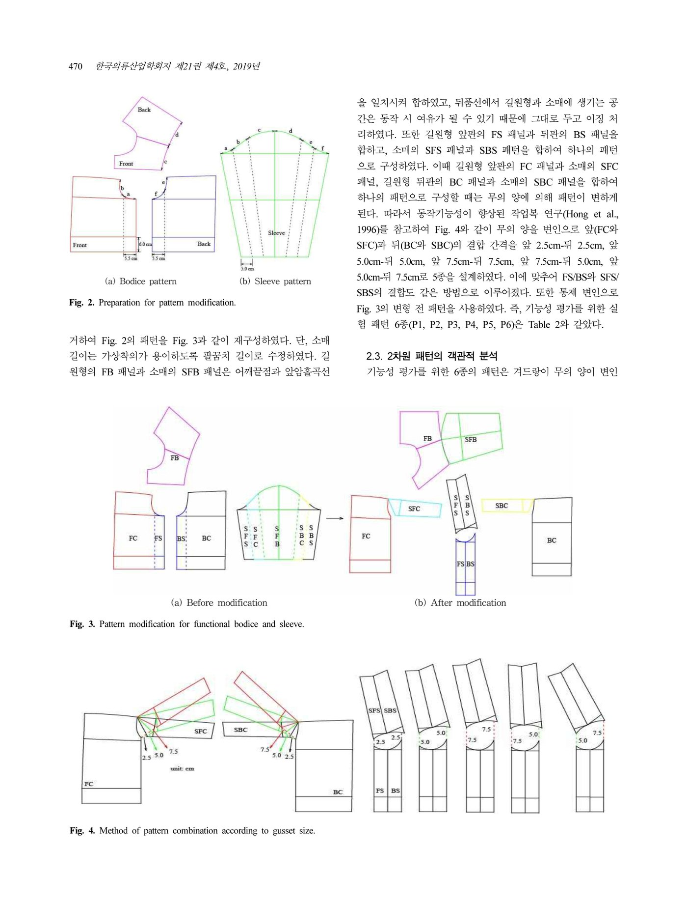
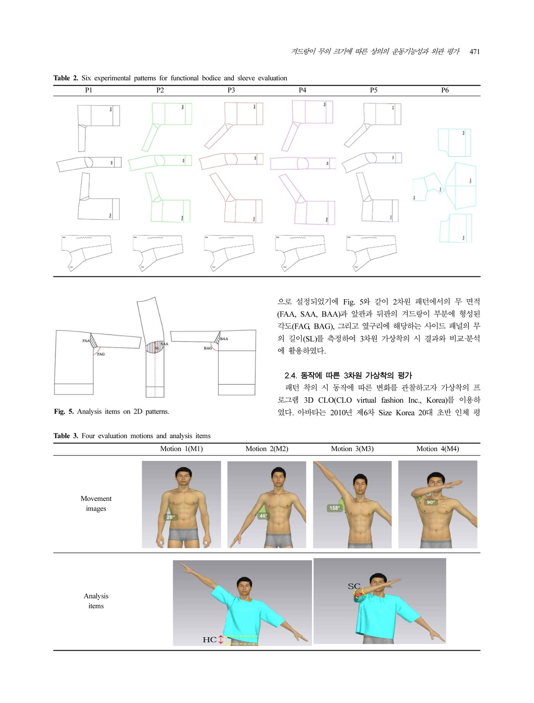

01 / Definition & construction principles
겨드랑이 거싯은 소매와 몸판이 만나는 겨드랑이 부위에 추가 여유를 제공하거나 응력을 분산하기 위해 삽입·통합하는 패턴 구조다. 팔을 들어 올릴 때 밑단이 과도하게 끌려 올라가거나 겨드랑이 주변이 당기는 현상을 줄이는 데 활용된다.
Diamond, triangular, curved, integrated는 서로 배타적인 공식 표준 분류가 아니다. 형태(shape), 패턴 구성(construction), 암홀/봉제선 형상은 서로 겹칠 수 있다. 제품 사진만으로 내부 패턴 구조를 단정하지 않는다.
02 / Gusset geometry – shape-based references
아래 항목은 거싯 또는 겨드랑이 패널의 외곽 형상에 따른 참고 유형이다. 제품 이미지는 외관·배치 참고이며, 내부 패턴 구조가 확인되지 않는 경우에는 해당 형태의 거싯이라고 단정하지 않는다.
Diamond, triangular, circular/oval은 주로 외곽 형상을 설명한다. Curved/ergonomic은 별도 거싯뿐 아니라 암홀·소매 패턴의 곡선 설계까지 포함할 수 있으므로, 형상과 패턴 구성 방식을 구분해서 기록한다.
SHAPE REFERENCE
Diamond / Rhomboid Gusset
다이아몬드형 · 마름모형
별도 마름모 패널을 겨드랑이에서 몸판과 소매 사이에 삽입하는 전형적인 거싯 구조. 팔을 들어 올릴 때 필요한 여유를 추가하고 겨드랑이 교차점에 집중되는 당김을 분산하는 데 목적이 있다.
Pattern-cutting notes
네 꼭짓점 위치와 앞·뒤 연결 길이를 설계한다. 중심선과 원단 신축 방향을 표시하고 소매 밑선·옆선 봉제 순서를 샘플에서 확인한다.
Evidence note
제품 사진만으로 내부 패턴이 정확한 다이아몬드형인지 확정하지 않는다.
SHAPE REFERENCE
Triangular / Wedge Gusset
삼각형 · 쐐기형
삼각형 또는 쐐기 형태로 특정 방향에 여유를 더하는 변형. 표준화된 별도 분류라기보다 거싯 외곽선 형태를 설명하는 용어로 이해하는 것이 정확하다.

제품/원문 출처 ↗
Pattern-cutting notes
팔을 올렸을 때 부족한 방향을 파악한 뒤 꼭짓점과 밑변 위치를 정한다. 면적보다 여유가 열리는 방향을 확인한다.
Evidence note
아래 이미지는 삼각형 거싯임을 확정하는 사례가 아니라 스포츠웨어의 겨드랑이 패널 참고용이다.
SHAPE REFERENCE
Curved / Ergonomic Construction
곡선형 · 인체공학형 패널/암홀
겨드랑이 주변 봉제선 또는 패널 경계를 곡선으로 설계해 팔 움직임 시 당김과 외관 주름을 조절하는 접근. 별도 거싯일 수도 있고 암홀·소매 형상 변경일 수도 있다.

제품/원문 출처 ↗

제품/원문 출처 ↗





Pattern-cutting notes
곡선 시작·끝점, 암홀과 소매 밑선 연결, 팔을 내렸을 때 여유분을 함께 확인한다.
Evidence note
별도 거싯과 변형 암홀/소매 패턴을 구분해 기록한다.
SHAPE REFERENCE
Circular / Oval (Dancer's Gusset)
원형 · 타원형 (댄서스 거싯)
원형 또는 타원형 거싯은 팔을 크게 움직이는 fitted sleeve에서 활용되는 패턴 응용 사례다. 팔을 올릴 때 펼쳐지고 팔을 내렸을 때 겨드랑이 아래에 여유분이 모일 수 있다.
Pattern-cutting notes
팔을 올린 상태의 겨드랑이 형태를 기준으로 형상을 잡고 팔을 내렸을 때의 여유분과 주름을 확인한다.
Evidence note
일반 테니스 상의의 흔한 상업 디테일이라고 단정하지 않고 패턴 연구 참고용으로 포함한다.
03 / Pattern drafting & construction workflow
아래는 기본 set-in sleeve에 다이아몬드형 거싯을 삽입하는 출발 절차다. 최종 치수는 원단 신축성, 기본 암홀/소매 균형, 목표 동작에 따라 토일로 결정해야 한다.
- 기준 패턴 준비: 몸판 앞·뒤와 소매 패턴을 준비하고, 겨드랑이점·옆선·소매 밑선·앞뒤 노치를 표시한다.
- 기존 봉제선 길이 확인: 샘플 또는 패턴에서 겨드랑이 부위에 거싯이 연결될 구간을 확인한다. Janome 튜토리얼은 소매 밑선 봉제 후 노치 사이 곡선을 따라 측정하는 방식을 설명한다.
- 거싯 기준선 작성: 연결 길이를 기준선으로 옮기고 중심점을 표시한다.
- 거싯 높이 설정: 중심에서 수직으로 거싯 높이를 설정한다. 높이는 원단의 신축성·목표 ROM·팔을 내렸을 때의 외관에 따라 토일로 결정한다.
- 외곽선 연결: 네 꼭짓점을 연결해 다이아몬드 기본형을 만들고, 필요하면 끝을 부드러운 곡선(football/oval)으로 다듬는다.
- 앞·뒤 균형 확인: 앞쪽과 뒤쪽의 연결 길이, 각도, 노치가 정확히 대응하는지 확인한다. 앞뒤 길이를 무조건 같게 만들기보다 패턴 구조와 동작 목표를 기준으로 결정한다.
- 시접과 결 방향: 봉제선에 시접을 추가하고, 거싯의 최대 신축 방향 또는 바이어스 방향을 의도적으로 배치한다. 니트 원단은 실제 원단의 가로·세로 신축 및 회복률을 먼저 측정한다.
- 봉제 순서: 거싯을 소매 밑선에 먼저 연결하고, 이후 거싯이 포함된 소매를 몸판 암홀/옆선에 연결하는 방식으로 테스트한다. 코너에서 구멍·주름·시접 노출이 없는지 확인한다.
- 토일 평가: 팔 내림, 45° 외전, 오버헤드 리치, 몸통 회전, 실제 서브 동작에서 밑단 상승·겨드랑이 당김·등판 주름을 비교한다.
Janome 예시의 거싯 높이(직물 신축성에 따른 인치 단위 범위)는 일반 블라우스 튜토리얼의 출발 예시다. 이를 테니스 니트 상의의 표준 치수로 그대로 적용하면 안 된다. 원단 신축률과 회복률, 패턴 밸런스에 맞춰 별도 샘플링해야 한다.
Janome – Adding Arm Gussets for Stage Movement
실제 제도 순서: 겨드랑이 연결 길이 측정 → 중심점 표시 → 거싯 높이 설정 → 다이아몬드/곡선 외곽선 → 시접 → 바이어스 방향 → 소매와 몸판 봉제.
SewFast DyeYoung – How to put Underarm Gussets in a Garment
소매 핏 확인부터 거싯 패턴 제도, 바이어스 재단, 소매와 몸판에 봉제하는 과정을 보여주는 영상.
04 / Research & technical evidence
겨드랑이 무의 크기에 따른 상의의 운동기능성과 외관 평가
박선희·이예진, Fashion & Textile Research Journal, 2019, 21(4), pp.468–479. DOI: 10.5805/SFTI.2019.21.4.468.
기본 몸판·소매를 기능성 패턴으로 재구성하고, 앞·뒤 겨드랑이 결합 간격을 달리한 5종과 거싯 없는 대조 패턴을 비교한다. 2D 패턴의 거싯 면적·각도·사이드 패널 길이를 분석하고 CLO 3D로 팔 28°, 45°, 158° 외전 및 팔 전방 굴곡 동작을 평가했다.
논문 속 패턴 제도 도해 – 원문 PDF 3~4쪽 부근
아래 이미지에서 Fig. 2~5를 집중해서 보면 좋다. Fig. 2~4는 기본 몸판·소매 패턴 준비, 기능성 패턴으로 재구성, 거싯 양에 따른 앞·뒤 결합 방식과 5개 실험 조건을 보여준다. Fig. 5는 2D 패턴에서 거싯 면적·겨드랑이 각도·사이드 패널 길이를 분석하는 기준이다.

Fig. 2 패턴 수정 준비, Fig. 3 몸판과 소매 재구성, Fig. 4 거싯 양에 따른 앞뒤 결합 방식
박선희·이예진, Fashion & Textile Research Journal, 2019, 21(4). CC BY 3.0 (원문 그대로 캡처)
원문 PDF 열기 ↗

Table 2 실험 패턴 6종, Fig. 5 2D 패턴 분석 항목, Table 3 평가 동작 4종
박선희·이예진, Fashion & Textile Research Journal, 2019, 21(4). CC BY 3.0 (원문 그대로 캡처)
원문 PDF 열기 ↗
큰 거싯이 모든 동작에 더 좋은 것은 아니다. 연구에서는 158° 팔 외전에서 P3 패턴이 앞·뒤 사선 주름과 밑단 변화가 가장 작았지만, 팔을 앞으로 움직이는 동작에서는 P2·P3·P5가 좋은 외관을 보였다. 즉 거싯 크기뿐 아니라 앞·뒤 분배와 동작 방향을 함께 설계해야 한다.
05 / Prototype & fit evaluation – tennis tops
| Prototype | Design | What to learn |
|---|---|---|
| A – Baseline | 기존 set-in sleeve, 거싯 없음 | 기준 밑단 상승·당김 |
| B – Diamond | 대칭형 다이아몬드 거싯 | 기본 거싯 효과와 외관 |
| C – Asymmetric | 앞·뒤 크기/각도 비대칭 | 서브의 전방·후방 움직임 차이 |
| D – Integrated | 소매/몸판 패턴 통합형 | 패널·봉제선 최소화 가능성 |
모든 샘플은 동일 원단·동일 사이즈·동일 봉제 조건을 유지하고 한 번에 하나의 패턴 변수만 변경한다. 평가 항목은 겨드랑이 당김, 팔 거상 ROM, 등판/옆판 주름, 밑단 상승량, 소매 밑단 이동, 주관적 편안함으로 구성한다.